Windows OS 설치¶
VM Console에 접속하여 Windows OS를 단계별로 설치합니다.
STEP 1. Console 접속¶
경로: 가상 머신 목록 → VM 선택 → Console 탭 → Web VNC에서 열기
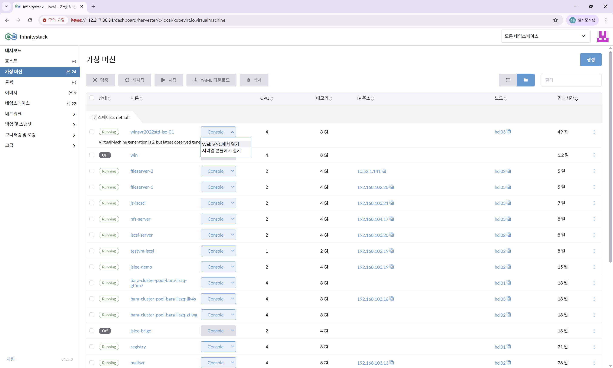
부팅 확인
Windows는 cdrom으로 부팅한 후 추가 설치를 진행해야 합니다.
STEP 2. 언어 및 시간 설정¶

| 항목 | 설정값 |
|---|---|
| 언어 | Korean (Korea) |
Next 클릭
STEP 3. 키보드 및 설치 시작¶
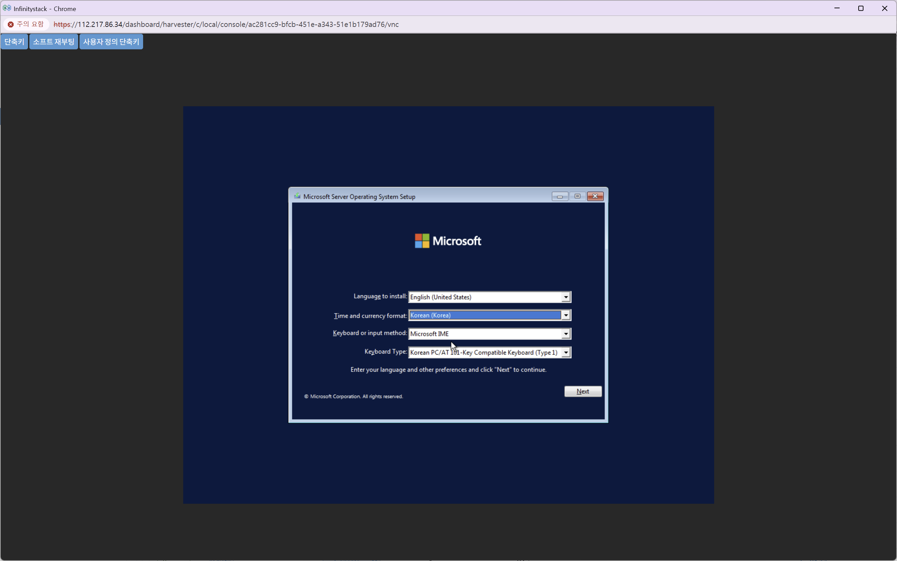
| 항목 | 설정값 |
|---|---|
| 키보드 | Microsoft IME |
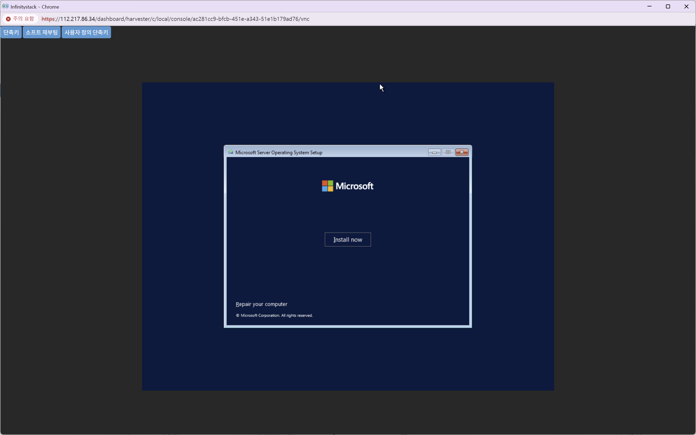
Install now 클릭
STEP 4. OS 버전 선택¶
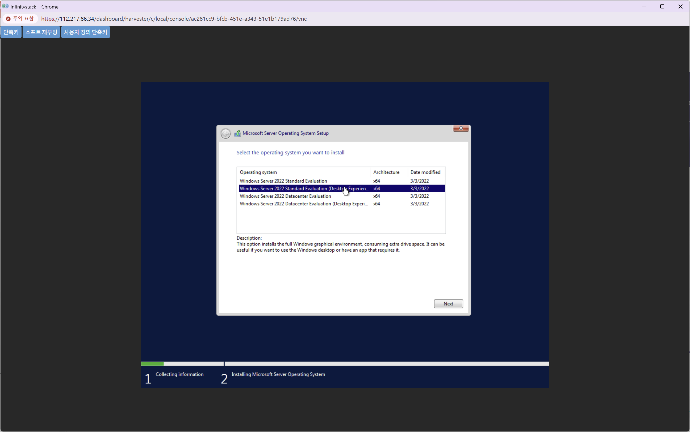
| 항목 | 설정값 |
|---|---|
| 설치 OS | Windows Server 2022 Standard Evaluation (Desktop Experience) |
라이선스 동의 체크 후 Next 클릭
STEP 5. 설치 유형 선택¶
경로: 설치 유형 → Custom: Install Microsoft Server Operating System only (advanced) 선택
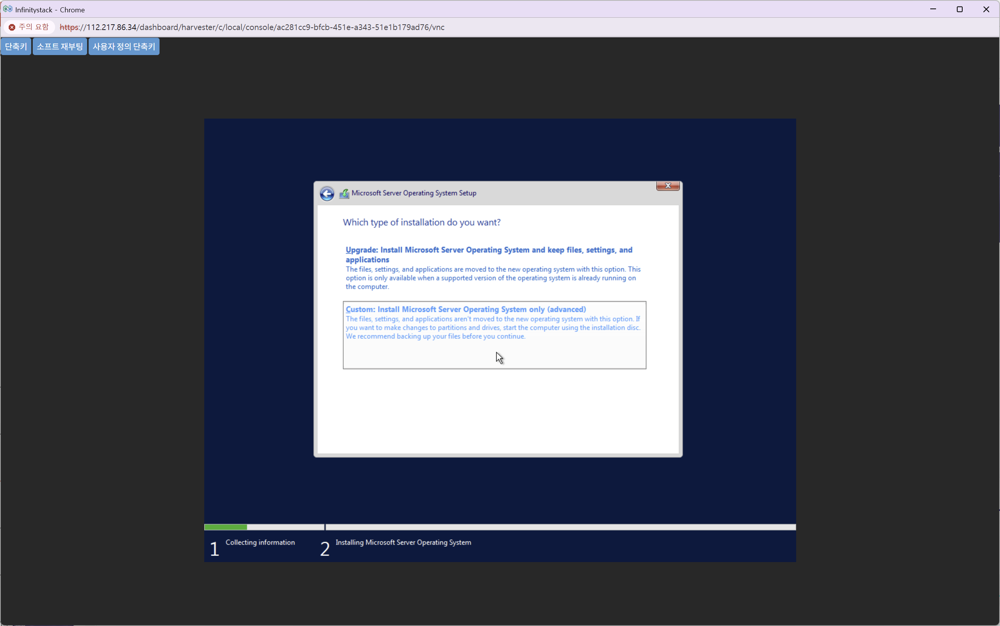
Load driver 클릭하여 VirtIO 드라이버를 로드합니다.
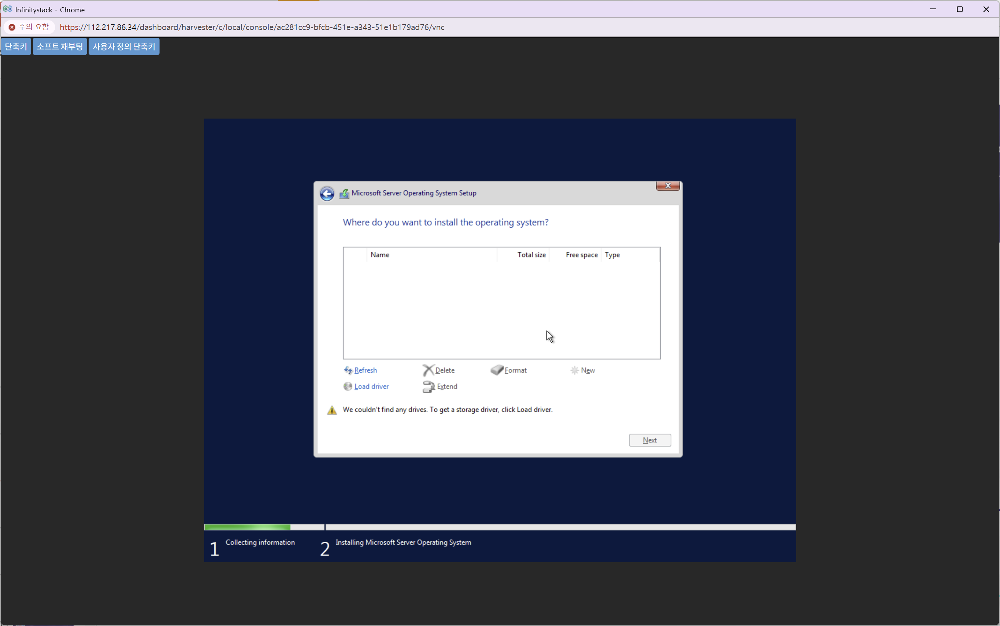
STEP 6. 드라이버 폴더 선택¶
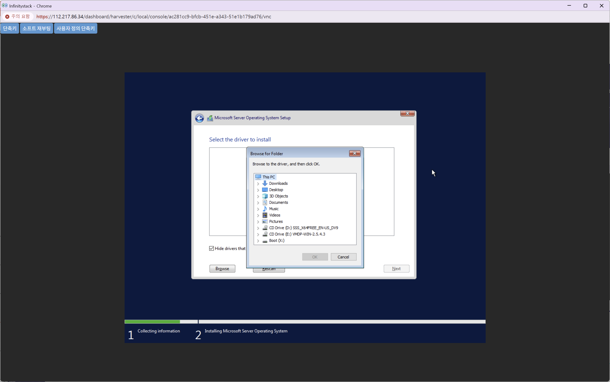
| 항목 | 값 |
|---|---|
| 드라이브 | CD Drive (E:) VMDP-WIN-2.5.4.3 |
| 폴더 경로 | E:\win10-11-server22\x64\pvvx |
OK 클릭
STEP 7. 드라이버 선택 및 설치¶
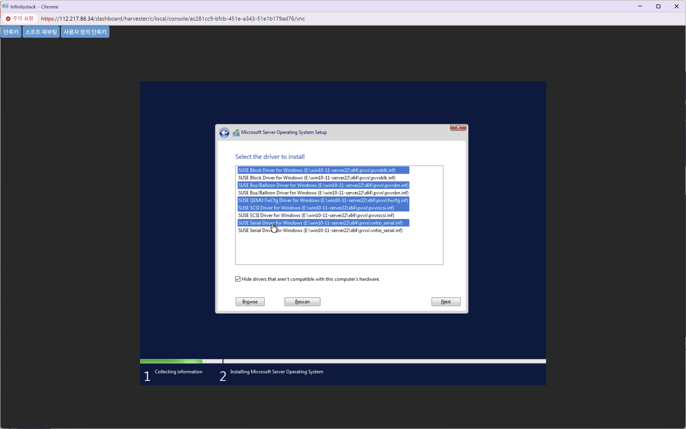
SUSE Block Driver for Windows 외 목록의 모든 드라이버를 중복 없이 모두 선택합니다.
주의사항
드라이버를 중복 선택하지 않도록 주의하세요.
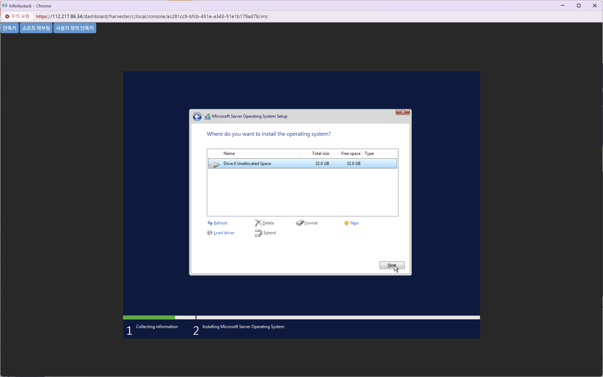
설치 위치: Drive 0 Unallocated Space 선택 → Next 클릭
STEP 8. 설치 진행 및 암호 설정¶
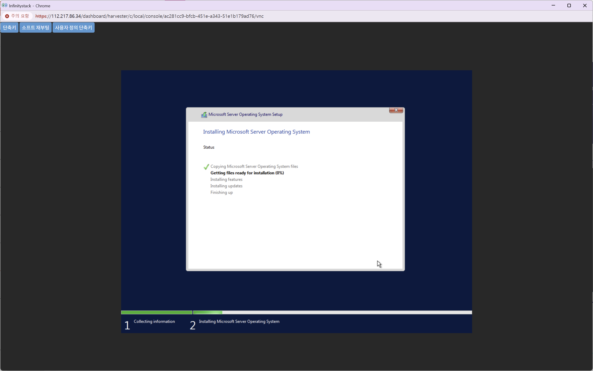
Windows 설치가 완료되면 관리자 암호를 설정합니다.
| 항목 | 설정값 |
|---|---|
| 계정 | Administrator |
| 암호 | 복잡도 요건에 맞는 암호 입력 |
| 암호 확인 | 동일 암호 재입력 |
보안 주의
실제 운영 환경에서는 복잡한 암호를 반드시 설정하세요.
STEP 9. 로그인 확인¶
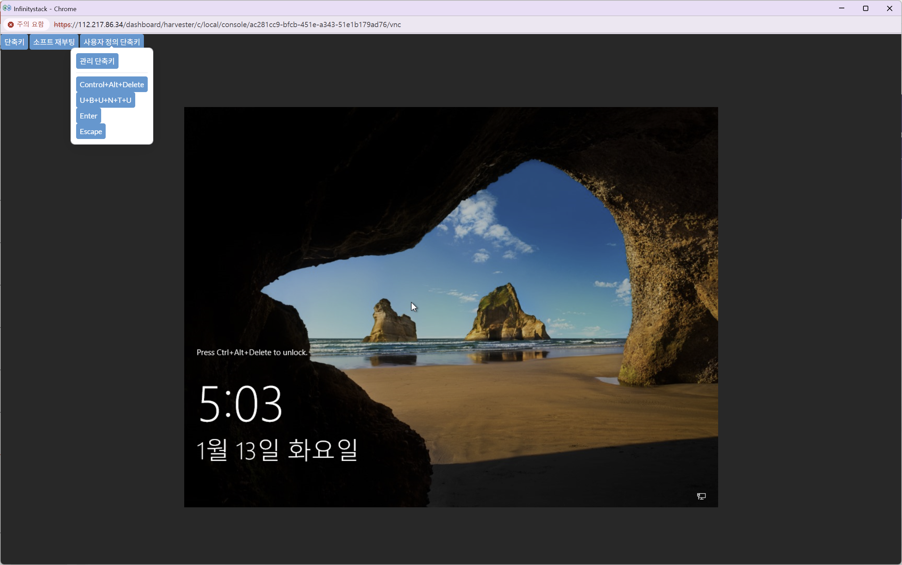
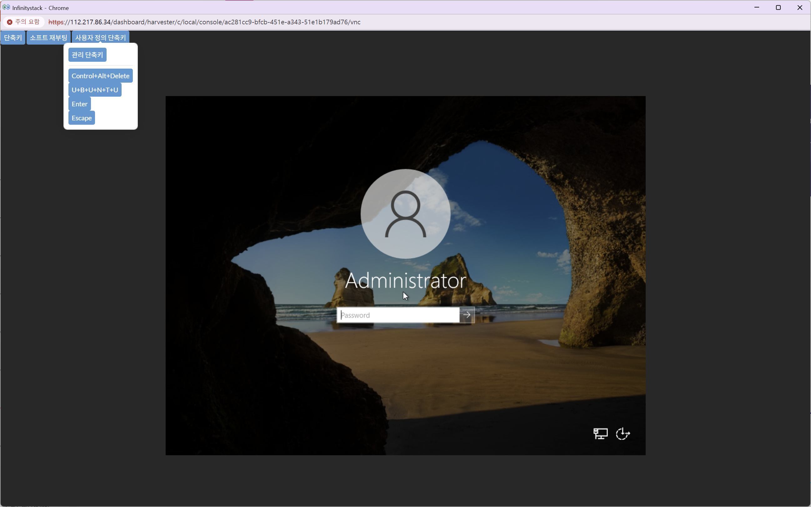
설치 완료 후 Administrator 계정으로 로그인하여 정상 설치를 확인합니다.
완료
Windows 바탕화면이 표시되면 OS 설치가 완료된 것입니다.